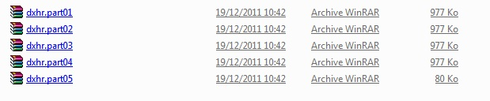

Tutoriel : Installer un jeu cracké.
I.) EXTRAIRE AVEC WINRAR
Vous devez utilisez Winrar si vos fichiers télécharger se présente sous une extension .rar, .zip, .7zip,
.gzip, .ace, .z, et d’autres encore.
Attention, il peuvent se présenter sous la forme « nom-du-fichier.EXT.partX », ou .ext représente
l’extension, et .partX le numéro de la partie coupé.
Exemple de fichiers découpés avec WinRar :

Afin de pouvoir recoller des fichiers, le plus simple est de regrouper tous les morceaux dans un même dossier.
Il est important que toutes les parties aient été téléchargées correctement pour que le recollage fonctionne.
Il suffit alors de cliquer sur le fichier nommé nom-de-fichier.rar.part1 , de sélectionner l’endroit dans lequel le fichier doit s’extraire puis de valider,ou bien de sélectionner toutes les parties, de faire un clic-droit et « extraire ici ».
Si toutes les parties sont présentes, le logiciel les recollera automatiquement et extraira le fichier complet à l’endroit souhaité. Si une partie ne se trouve pas dans le bon dossier, le logiciel affichera un message vous demandant de chercher le fichier manquant.